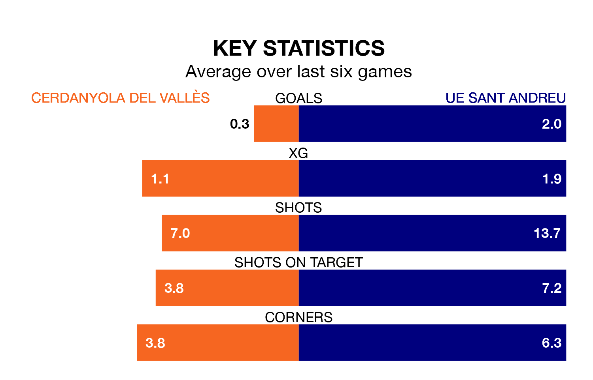

Mid-season relegation candidates Cerdanyola del Vallès face a challenge against high-flying UE Sant Andreu on Sunday.
Cerdanyola del Vallès are 16th in the Segunda División RFEF Group 3 table, and have picked up four wins and six draws in their 18 games to date.
UE Sant Andreu, meanwhile, are fourth in the standings with 32 points, having won nine and drawn five, and are four points behind table-toppers Lleida Esportiu.
With 29 goals in 18 games so far this season, UE Sant Andreu are the league's joint-second-highest scorers with 1.6 goals per game. And they are conceding fewer than average, letting in 18 goals at a rate of 1.0 per game.
Cerdanyola del Vallès, meanwhile, are below average scorers, with 1.1 goals per game, compared to a league average of 1.2. They have conceded 1.6 goals per game.
The home team are in terrible form in Segunda División RFEF Group 3, with no wins and two draws from their last six games.
With five wins and one loss over that period, the visitors' form is much better – they have taken 15 points from 18, compared to Cerdanyola del Vallès's two.
In the last 10 years, Cerdanyola del Vallès and UE Sant Andreu have played each other on eight occasions. They won three each, and they drew twice.
On average, Cerdanyola del Vallès scored 1.4 goals and UE Sant Andreu 1.8 in those matches.
Their last meeting was on September 10, when Cerdanyola del Vallès won 4-3 away.
Cerdanyola del Vallès's last match was on January 14, a 1-0 loss against Torrent.
UE Sant Andreu beat Penya Independent 4-0 last time out, also on January 14.
Updated: 13:09 (UTC), 17/01/24